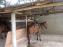

You align graphics with text by using the ALIGN attribute along with the <IMG> tag.
There are three alignment options: top, middle and bottom. By default, the alignment provide the text at the bottom of the image.
This is a beautiful road. Text and graphic aligned top.
A picture of the city of Peter The Great. Text and graphic aligned texttop.
Look how beautiful this Text and graphic aligned middle.
It looks like falling down.Text and graphic aligned absmiddle.
The Horse is waiting. Text and graphic aligned baseline.
